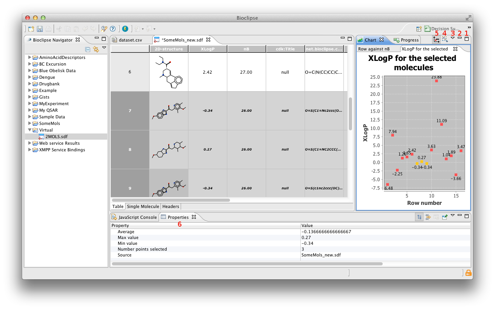

The chart view
The chart view are showing plots, mainly made from the matrix editor or the molecular table editor. But it's also possibly to plot from the JavaScript console. Except for showing the plotted data the view also interacts with the source by high-lighting the corresponding data in the editor that it originated from, and makes a summation of the selected points in the properties view. It also interacts the other way around with the editors, i.e. by hight-lighting points that are related to selections in the editor.

The toolbar
The toolbar is in the top of the view and except for showing different tabs for the different views stacked on top of each other, it also has some other buttons. In case with the chart view there's five different buttons. The two left-most are just for maximize (1) and minimize (2) the view, this can also be achieved by double click on the toolbar. The other three will be described in more detail below.
The menu
The third from left is a triangel (3), and when clicking on that a menu with four items will appear. The three first, from the top, will export the diagram as an image. The reasons for having three different options for this is that it make it possibly to choose between three different formart for the output image: SVG (vector based image), PNG and JPG.
The last alternative are showing or hiding points labels in the chart, and is availably form the tool bar as well.
Select/zoom
With the fourth button (4) from the left its possibly to change between selection- and zoom-mode. The default for this is the selection mode, and it makes it possibly to select several points in the chart to get more information about them. It's also possibly to select only one point by clicking on it. Observe that selecting only one point by a click is availably in zoom-mode as well. Exactly what information that is shown in the properties view depends on whether it's a single point or several points that are selected. It might also depend on the source of the plot, i.e. if it was made from the matrix editor or the Molecular table editor. Also notice that multi selection dont work in the histogram plot.
When clicking on the button it will change to showing a magnify-glas, and activate zoom-mode. In this mode it's possibly to zoom in the diagram to take a closer look in some part of a part of the chart, this is done by pressing the left button and moving the mouse down and to the right un till the area that is wanted is covered by the rectangle that appar. When the zooming is done it's possibly to change back selection mode to investigate the points in the zoomed area. To zoom-out, make sure that the zoom-mode is active and then click some where on in the chart, draw the mouse upwards a bit while keeping the button (on the mouse) down and then release it.
Point labels
The last button and the one to the first from right (5) are for showing point labels in the chart, the default for this is to not show the point labels. The values that are shown are the y-value of the points for all plot types except for the histogram where it shows the range of the bar along the x-axis. It's also possibly to control this from the menu, as mention above.
The properties view
As menton in the first section above a selection in the chart will display information about the selection in the properties view (6). Where it is located depends on the settings, but most likely it is below the editors. If the view is not open then it's possibly to open it via the menu Window > Show view > Others... > properties view.
When selecting one point is selected the properties view will show the x-value of the point together with the label of the x-axis, and the y-value together with its label. If two or more values are selected the properties view will show (from the top row and down) the average value of the points, maximum value along the points, the minmum value and the number of points selected. In both the cases the properties view will show the name of file (source) that the plotted values are from. Observe that the labels of values are sorted in the alphabetic order, here-since the order of the vales when one point is selected will depend on the x- and y-labels of the chart.
Scripting
It is also possibly to plot data from the JavaScript console. This is done with help of the chart-manager, there's five different plot types to choose between: barPlot, histogram, line plot, scatter plot and time series. the methods can plot data both from two arrays with numbers and from a matrix with two columns. For more information about the API see the Manager reference in the section Bioclipse scripting on the help pages.